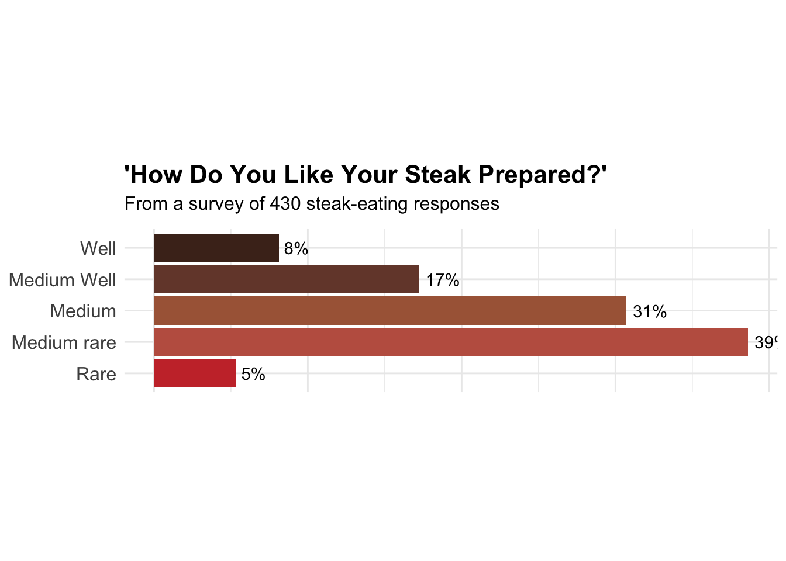

Attaching package: 'dplyr'The following objects are masked from 'package:stats':
filter, lagThe following objects are masked from 'package:base':
intersect, setdiff, setequal, unionReproducible Data Science: How Americans Like Their Steak (FiveThirtyEight)
The following notebook aims to satisfy the requirements for the individual project component of BST 270: Reproducible Data Science, taken Winter 2025.
I aim to reproduce the figure and the table from FiveThirtyEight’s How Americans Like Their Steak. I will utilize the provided dataset based on a survey testing 550 people about their risk evaluation and steak preference, located at ../data/steak-risk-survey.csv.
First, we load our required packages and required dataset. We utilize the dplyr, knitr and ggplot2 library to produce nice figures and tables and process data efficiently.
Attaching package: 'dplyr'The following objects are masked from 'package:stats':
filter, lagThe following objects are masked from 'package:base':
intersect, setdiff, setequal, unionHere we remove the first two rows which are of no information.
# Remove first two invalid rows
steak_data <- read.csv("../data/steak-risk-survey.csv",header = T)
steak_data = steak_data[-c(1,2),]The original dataset has too long names and some irrelevant variables, so we extract a new dataset that is useful for our analysis.
# Filter and rename the dataset
steak_lottery_data = data.frame(lottery = steak_data$Consider.the.following.hypothetical.situations...br.In.Lottery.A..you.have.a.50..chance.of.success..with.a.payout.of..100...br.In.Lottery.B..you.have.a.90..chance.of.success..with.a.payout.of..20...br..br.Assuming.you.have..10.to.bet..would.you.play.Lottery.A.or.Lottery.B., eat_steak = steak_data$Do.you.eat.steak.,cook_steak = steak_data$How.do.you.like.your.steak.prepared.)
write.csv(steak_lottery_data, file = "../data/steak_lottery_data.csv")
head(steak_lottery_data) lottery eat_steak cook_steak
1 Lottery A Yes Medium rare
2 Lottery A Yes Rare
3 Lottery B Yes Medium
4 Lottery B Yes Medium
5 Lottery A Yes Medium rare
6 Lottery A No The table in the article shows the pertange of steak preparation preference of the people who choose a riskier lottery or a safer lottery.
First we need to remove all the NA (or empty values) in lottery variable, and focus on people who eats steak:
df1 = steak_lottery_data %>%
filter(lottery != "", eat_steak == "Yes")
dim(df1)[1] 426 3There are 426 people who answered the lottery question and also eat steak. Next we reproduce the table:
kable(tb1*100,format = "html",digits = 1)| Riskier lottery | Safer lottery | |
|---|---|---|
| Well | 7.3 | 9.0 |
| Medium Well | 16.1 | 18.1 |
| Medium | 36.1 | 25.8 |
| Medium rare | 35.6 | 41.2 |
| Rare | 4.9 | 5.9 |
Comment: We nearly recovered the table in the article, with slight difference.
The figure shows the percentage of the steak preparation preference of all steak-eating interviewees. First we filter out all people who eat steak.
# Create the counting table
df2 = steak_lottery_data %>%
filter(eat_steak == "Yes")
prep_names = c("Rare","Medium rare","Medium","Medium Well","Well")
df2.1 = data.frame(table(df2$cook_steak)[prep_names]/sum(table(df2$cook_steak))*100)
colnames(df2.1) = c("Cooked","Percentage")
df2.1 Cooked Percentage
1 Rare 5.348837
2 Medium rare 38.604651
3 Medium 30.697674
4 Medium Well 17.209302
5 Well 8.139535Next we reproduce the plot in the article:
# Reproduce the figure
gg = ggplot(df2.1, aes(x = Cooked, y = Percentage)) +
geom_bar(stat = "identity", fill = rev(c("#4B2C20", "#754637", "#AA6546", "#C06050", "#C93535"))) +
coord_flip() +
geom_text(aes(label = paste0(round(Percentage), "%")), hjust = -0.2) +
labs(
title = "'How Do You Like Your Steak Prepared?'",
subtitle = paste("From a survey of", sum(nrow(df2)), "steak-eating responses"),
x = NULL,
y = NULL
) +
theme_minimal() +
theme(
plot.title = element_text(size = 16, face = "bold"),
plot.subtitle = element_text(size = 12, margin = margin(b = 10)),
axis.text.x = element_blank(),
axis.text.y = element_text(size = 12),
axis.ticks = element_blank(),
aspect.ratio = 0.25
)
gg
Comment: From the plot we see that we nearly reproduced the figure, only with slight difference in the percentage.
ggsave("../fig/steak_preference.png",plot = gg)Saving 7 x 5 in imageThe data is publicly available, and the figure and the table are quite reproducible. I think the only problem arises in the first two rows I removed. As these two rows are indeed invalid ones, I guess the author made some mistakes when storing the data as the csv file.